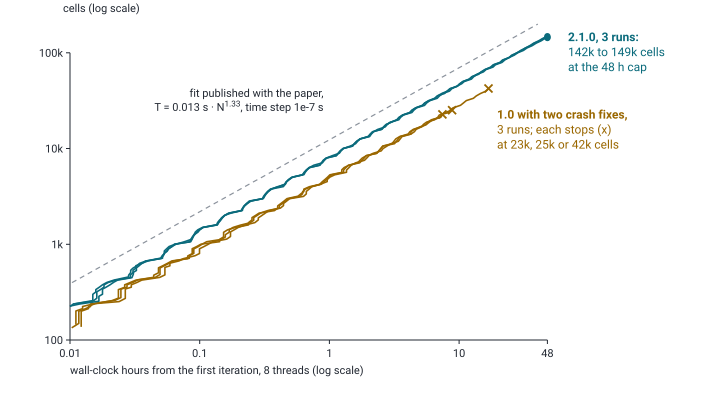
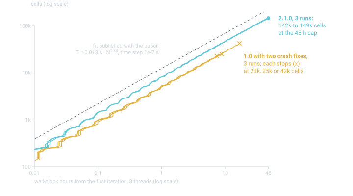
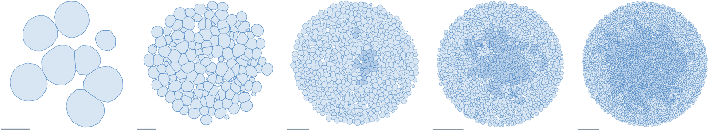
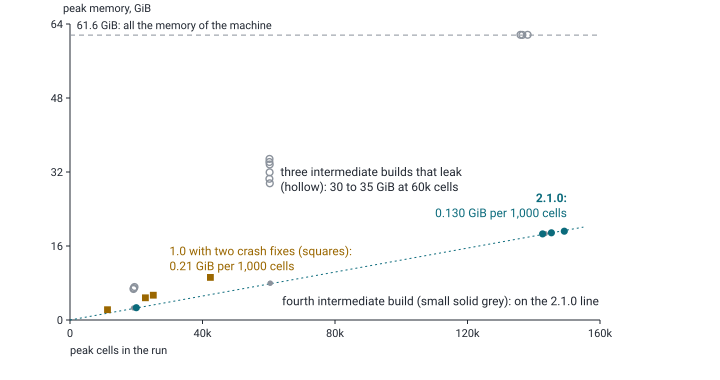
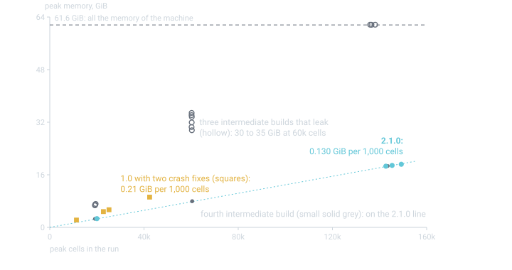

Wall time, scaling and memory#
All numbers on this page were measured on 8-core cloud machines (GCP c2-standard-16, 8 threads
pinned to 8 physical cores) in November 2026 (Method). Growth-benchmark numbers
are for the lab’s parameters_benchmarck.xml with contact model 1 at a time step of 2.5e-8 s.
Another machine, thread count or configuration gives other numbers; use these to size a run, not
as a promise.
Wall time#
The same work in 1.0 with two crash fixes and in 2.1.0. Mean ± standard deviation where there are replicates.
Measure |
1.0 with two crash fixes |
2.1.0 |
Change |
|---|---|---|---|
Growth benchmark to 10,000 cells, h |
2.53 ± 0.06 |
1.28 ± 0.01 |
2.0× faster |
Vesicle, 100,000 iterations, h |
16.55 ± 0.62 |
6.20 ± 0.95 |
2.7× faster |
Tube, 100,000 iterations, h |
6.29 |
3.69 |
1.7× faster |
Mono- or multilayer vesicle, paper protocol, h |
0.46 |
0.18 |
2.6× faster |
Long multilayer vesicle file, iterations done in 48 h |
49,748 |
87,084 |
1.8× more |
Memory per 1,000 cells, growth benchmark, GiB |
0.214 |
0.130 |
39% less |
Share of the 8 cores kept busy, growth benchmark |
49% |
83% |
+34 points |
The pooled vesicle means mix two sets of runs: 1.0 with two crash fixes completes only ε = 1.5, 2.0 and 3.0, while 2.1.0 also completes the faster ε = 1.0 and 4.0, and the 2.1.0 replicates ran on faster machines than its first run (Method). Matched on ε = 1.5, 2.0 and 3.0 and within one launch wave, 2.1.0 is 2.31 to 2.38 times faster in the first wave and 2.57 to 2.73 times in the replicate wave.


Cells against wall-clock time, growth benchmark, three runs per version, from 36 seconds after the first iteration (about 130 to 240 cells) to the end. 2.1.0 reaches each size in about half the time of 1.0 with two crash fixes, whose runs stop with the refinement error (x). The dashed line is the fit published with the paper (\(T = 0.013\,\mathrm{s} \cdot N^{1.33}\)), measured at a four times larger time step on other hardware; compare its slope, not its height.#


Cells against wall-clock time, growth benchmark, three runs per version, from 36 seconds after the first iteration (about 130 to 240 cells) to the end. 2.1.0 reaches each size in about half the time of 1.0 with two crash fixes, whose runs stop with the refinement error (x). The dashed line is the fit published with the paper (\(T = 0.013\,\mathrm{s} \cdot N^{1.33}\)), measured at a four times larger time step on other hardware; compare its slope, not its height.#


One 2.1.0 run of the growth benchmark from 16 cells to its last snapshot; in the two largest frames the fill at the centre is denser because cells there are superposed. Mid-plane cross-sections, each at its own scale: 16 cells (bar 5 µm), 1,032 (10 µm), 12,623 (25 µm), 41,739 (50 µm), 136,043 (50 µm). Fills are translucent, so the denser centre of the two largest frames (darker on a light page, brighter on a dark page) is where two cell outlines cover the same area.#
In simulated time the two versions grow alike: 10,000 cells arrive after 25.33 cell cycles in 1.0 with two crash fixes and 25.48 in 2.1.0, 0.6% apart (three runs each). The difference is in wall time only.
Hours from the first iteration to each size, three runs per version (one run where marked):
Cells |
1.0 with two crash fixes |
2.1.0 |
|---|---|---|
1,000 |
0.11 ± 0.01 |
0.07 ± 0.00 |
5,000 |
0.99 ± 0.02 |
0.52 ± 0.00 |
10,000 |
2.53 ± 0.06 |
1.28 ± 0.01 |
20,000 |
6.28 ± 0.18 |
3.36 ± 0.07 |
30,000 |
10.80 (1 run) |
5.52 ± 0.11 |
60,000 |
stops before |
14.20 ± 0.12 |
100,000 |
stops before |
28.08 ± 0.23 |
125,000 |
stops before |
37.70 ± 0.84 |
In 48 hours the three 2.1.0 runs ended at 144,919, 148,914 and 142,314 cells with no cell removed. The three runs of 1.0 with two crash fixes stopped at 25,129, 22,719 and 42,335 cells.
Scaling#
Exponent, 2.1.0 |
Value |
Range of N |
|---|---|---|
Cumulative wall time T(N) |
1.333 ± 0.010 |
10,000 to the end of each run |
Cumulative wall time, local |
1.36 |
above 30,000 |
Wall time per iteration |
1.10 ± 0.01 |
10,000 to the end of each run |
The fit published with the paper (Fig. 1e) is \(T = 0.013\,\mathrm{s} \cdot N^{1.33}\), also for cumulative time, so the exponents agree. The per-iteration exponent is lower because a growing tissue takes more iterations per doubling as it grows; it is the one to use for a run of fixed length on a tissue of fixed size. 1.0 with two crash fixes gives \(T(N) \propto N^{1.344 \pm 0.016}\) over the range its runs reach. 2.1.0 and all four intermediate builds steepen above 30,000 cells, to local exponents of 1.36 to 1.39.
Seconds per iteration at matched size, mean of three runs:
Cells |
1.0 with two crash fixes |
2.1.0 |
|---|---|---|
1,000 |
0.43 |
0.23 |
10,000 |
5.09 |
2.58 |
30,000 |
16.4 (1 run) |
8.27 |
60,000 |
stops before |
18.3 |
100,000 |
stops before |
32.0 |
140,000 |
stops before |
43.8 |
The contact phase takes most of an iteration, and its share grows with the tissue: 66% of the timed phases at 1,000 cells and 75% at 140,000 cells in 2.1.0.
Memory#


Peak memory against peak cell count, one point per growth run at 2.5e-8 s that reached 1,000
cells. 2.1.0 needs about 0.13 GiB per 1,000 cells, 39% less than 1.0 with two crash fixes. Three
intermediate builds (hollow) leaked memory and filled the machine; the fourth (small solid grey
points) lies on the 2.1.0 line.#


Peak memory against peak cell count, one point per growth run at 2.5e-8 s that reached 1,000
cells. 2.1.0 needs about 0.13 GiB per 1,000 cells, 39% less than 1.0 with two crash fixes. Three
intermediate builds (hollow) leaked memory and filled the machine; the fourth (small solid grey
points) lies on the 2.1.0 line.#
2.1.0 held 18.9 GiB at 145,000 cells (18.6 to 19.2 GiB over its three runs). Memory grows linearly with the cell count.
1.0 with two crash fixes needs 0.21 GiB per 1,000 cells (0.211 to 0.217 over three runs).
Three intermediate builds leaked about 140 KB for every division that failed after its daughter cells existed. At 60,000 cells they held 30 to 35 GiB, against 8.0 GiB for the intermediate build without the leak, and they reached the machine’s 61.6 GiB before the end of their 48-hour runs, after which they ran from swap. 2.1.0 avoids the leak by refusing such divisions earlier; the underlying defect is still open (Limits of the model).
Cores kept busy#
Share of the 8 cores in use over a whole run, (user + system CPU time) / (elapsed × 8), median over runs:
Case |
1.0 with two crash fixes |
2.0 |
2.1.0 |
|---|---|---|---|
Growth benchmark |
49% |
not measurable |
83% |
Vesicle sweep |
36% |
52% |
61% |
Tube |
48% |
64% |
77% |
Where the speed came from#
Most of the speed-up arrived before 2.1.0:
2.0 is 1.5 to 1.8 times faster than 1.0 with two crash fixes on the vesicle and the tube.
One later commit to contact model 2 (
f08df16) gave another 1.4 times on the vesicle and 1.2 times on the tube.Release 2.1.0 itself is 4 to 7% faster than the builds just before it on the growth benchmark (to 60,000 cells), and no faster on the vesicle.
What 2.1.0 adds is that runs finish and that memory stays flat. On the growth benchmark, the factor of two between 1.0 with two crash fixes and 2.1.0 is mostly parallel use of the cores (49% against 83%, a factor of 1.7); the remaining factor of about 1.2 is CPU time per iteration. This split is inferred from the CPU-time totals, not from a profile.
Cost#
At the on-demand list price of this machine type in us-central1, about USD 0.84 per hour, growing the benchmark tissue to 125,000 cells with 2.1.0 costs about USD 32 (37.7 ± 0.8 h). The whole benchmark took 1,827 run-hours.
Comparison with the paper#
The paper reports one day of computation for 125,000 cells on an Intel Xeon W-2245 (eight cores)
with 16 threads, at a time step of 1e-7 s (Table 2). 2.1.0 needs 37.7 ± 0.8 h for 125,000 cells
here. The two numbers are not comparable directly: the machine, the thread count and the time step
all differ. At 2.5e-8 s a run takes four times as many iterations per simulated second, and the
published 1e-7 s is unstable for this file in every build (Stable time step). The
scaling exponent of cumulative time, which does not depend on those factors to first order,
agrees: 1.333 ± 0.010 here against 1.33.
Sizing a growth run#
Measured with 2.1.0 on this hardware, growth benchmark at 2.5e-8 s, 8 threads:
Target cells |
Wall time |
Peak memory |
|---|---|---|
10,000 |
1.3 h |
about 1.5 GiB |
60,000 |
14.2 h |
about 8 GiB |
100,000 |
28.1 h |
about 13 GiB |
125,000 |
37.7 h |
about 16 GiB |
145,000 |
about 48 h |
18.9 GiB |
Memory in this table comes from a linear fit to the 2.1.0 memory samples: about 0.13 GiB per 1,000 cells plus about 0.16 GiB. Only the 145,000-cell row is a direct measurement. For other sizes, scale the time by \(N^{1.36}\) above 30,000 cells and add 0.13 GiB of memory per 1,000 cells. Extrapolating each run’s \(N^{1.36}\) fit (30,000 cells to the end) to one million cells gives 25 to 28 days and about 130 GiB; that size was not run, and the contact share of an iteration was still rising at 150,000 cells.
A fixed-length run of a tissue that does not grow scales with the per-iteration exponent instead: the vesicle (432 epithelial cells, 100,000 iterations) takes about 6 h and the tube (192 cells, 100,000 iterations) about 3.7 h.
Beyond about 5,000 cells the growth benchmark is a test of the software’s scale and cost, not a physically packed tissue (Limits of the model).